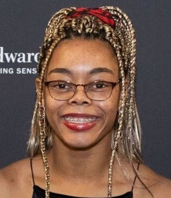

Hello! My name is Eryka McIntyre, but please feel free to call me Michelle!
Welcome to my website, stay as long as you’d like!
I was born in Oakland, California in 2001 and moved to Texas around 2004 when the crime rates rose to an all time high, which led my dad into looking for a job transfer. Once I moved to Texas, I took up an interest in soccer, which led me to the position that I am in today. I am a Business major with a minor in TAM, however I’ve had my fair share of exploring through some of the most popular majors that Mizzou has to offer, while also being a hardworking student-athlete.
My favorite color is pink. I love the color pink because it is a loud and vibrant color that catches peoples attention whenever it's present. Your favorite color and the reasons why it's your favorite is how you are as a person. I am a very out going person who enjoys the social scene.
Degrees in Progress:
Bachelor's Degree in Business - Emphasis in Marketing
A Degree in TAM
Positions Held:
Camp Couselor
Ticket Admissions
Trainer
Career Skills:
Organization
Time Managment
Creativity
Active Listening
Open Communication
This is me!

“When you fail to make an effort to solve the issue, you become a part of the issue itself. Be the change.”